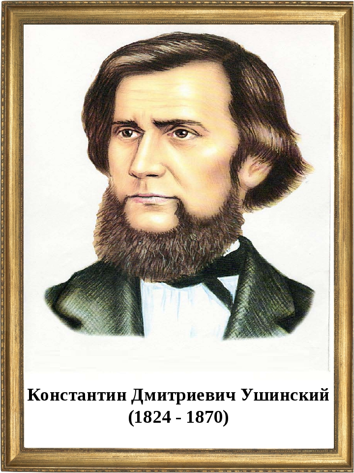

Как правильно слушать лекцию?
Чтобы восприятие было полным и осмысленным, рекомендуется заранее готовиться к лекции, для этого полезно
повторить
предыдущий материал. Тогда восприятие нового материала будет более эффективным.
Нужно сформировать у себя установку
на то, что материал, который будет сейчас излагаться, очень важен как для усвоения последующей информации, так и
для
дальнейшей учебы, для будущей профессии.
Эффективность познавательной деятельности студента в процессе слушания лекций всецело зависит от направленности
его
внимания. Известный русский педагог Константин Дмитриевич Ушинский (1824—1870/71) назвал внимание той дверью,
через
которую проходит все, что входит в душу человека из внешнего мира.

В деятельности студента на лекции проявляются различные свойства внимания:
- устойчивость
- концентрация
- объем
- распределение
- переключение
Каждое из них весьма существенно. Например, устойчивость и концентрация позволяют студенту длительное время
сосредоточиваться на своей работе даже при внешних раздражителях и помехах.
Главное в том, чтобы процесс записи во
время лекции не мешал слуховому восприятию материала. В первую очередь необходимо усвоить материал на слух,
понять и
осмыслить его.
Работа студента на лекции — сложный процесс, сочетающий в себе три вида деятельности:
- слушание
- осмысливание
- конспектирование (запись)
Причем умение слушать, как один из важных методов восприятия информации, используется намного чаще, чем умения
читать
и писать вместе взятые. Данный канал передачи информации наиболее часто задействуется в учебном процессе.
Психологи установили, что время, которое мы посвящаем разным видам коммуникации, в среднем распределяется
следующим образом:
- около 40% времени мы тратим на слушание
- до 35% — на разговоры
- до 16% — на чтение
- до 9% — на письмо
Слышать и
слушать — не одно и то же.
Умение слушать
подразумевает гораздо более утонченный мыслительный процесс, чем просто умение слышать. Чтобы научиться слушать
эффективно, требуются затраты времени и сил, но это — самый простой и доступный способ получения полезной
информации.
Он требует определенной дисциплины и затрат энергии. Причем умение слушать эффективно — не врожденное,
данное нам от природы, оно является приобретаемым и его необходимо постоянно развивать.
Процесс слушания и понимания требует подчас значительного умственного напряжения и бывает затруднен целым
рядом
причин.
-
Высокая скорость умственной деятельности.
Мы думаем в 4 раза быстрее, чем говорим. Поэтому, когда кто-либо
говорит, мы можем отвлекаться от речи говорящего, начинаем думать о чем-то постороннем, наши мысли витают
где-то
далеко. Большая разница между скоростью речи и мыслительного процесса может стать главным препятствием
эффективного
слушания.
-
Избирательность внимания.
Мы с детских лет привыкли слышать одновременно многое, не уделяя всему
предельного
внимания. Попытка внимательно слушать все и всегда — непосильное занятие. Поэтому мы приучаемся
последовательно
выбирать то, что представляет для нас наибольший интерес. Привычка переключать внимание с объекта на объект
затрудняет фиксирование внимания.
-
«Антипатия» к чужим мыслям.
Нам легче следовать своим мыслям, нежели заставлять себя следить за тем, что
говорит
другой. Прошлый опыт человека, его убеждения становятся своеобразными фильтрами, сквозь призму которых
воспринимаются чужая точка зрения и чужие мысли. Это приводит к появлению барьеров, мешающих прислушиваться к
чужому
мнению и новой необычной информации.
-
Потребность в репликах и критических суждениях.
Чья-то речь может вызвать у нас потребность немедленно
возразить.
Мы уже не слушаем, наши мысли заняты формулированием комментариев или критических суждений, с которыми мы
хотим
выступить по окончании речи. У некоторых людей существует очень вредная привычка: постоянно перебивать
говорящего,
сразу же высказывать свое мнение, даже не дослушав до конца.
-
Предвзятое слушание.
Этот барьер на пути эффективного слушания возникает тогда, когда у нас уже
сформировано
свое мнение о том, что будет сказано. Когда мы ожидаем услышать нечто определенное, то часто не прислушиваемся
к
тому, что именно говорится. Мы как бы заранее навешиваем на информацию ярлык «ненужной, неинтересной,
чрезвычайно
сложной или не дающей ничего нового».
-
Уникальное восприятие информации.
На слуховое восприятие, как и на любое другое, оказывают сильное
влияние
прошлый опыт человека, воспоминания, установки, интересы, убеждения, ожидания, предположения, чувства,
предрассудки,
окружение, образующие своеобразные фильтры. Таким образом, слушание — процесс — субъективный и выборочный.
Информация, противоречащая убеждениям и установкам слушателя, может либо совсем не восприниматься, либо
восприниматься искаженно в позитивную или негативную сторону. Фильтр прошлого опыта, например, может заставить
слушателя ожидать услышать то, что отвечает его стремлениям или желаниям. Информация, которую мы получаем, как
бы
просеяна через наши фильтры, обработана нами и уже не является сырой.
-
Сильные чувства — барьер на пути к эффективному слушанию.
Они могут вызвать дезорганизацию воспринимаемой
информации, ее искажение и путаницу. Фильтры прошлого опыта выстраиваются также в тех случаях, когда
обсуждаются
такие вопросы, которые нам не хочется обсуждать по различным эмоциональным причинам.
В качестве средства защиты
мы
выдвигаем противоречивую мысль или используем в речи слова, вызывающие неприятные ассоциации. Некоторые слова
могут
создавать барьер на пути к эффективному восприятию, так как вызывают определенные сильные чувства. Такие слова,
несущие в себе определенный эмоциональный заряд, получили название «горячих кнопок» или «красных флажков». У
каждого
человека свои «красные флажки». Примеры негативно заряженных фраз: «маменькин сынок», «примитивный»,
«неудачник»,
«вы
обязаны, должны...», «вам следует...», «вам нужно...» т.п.
Могут оказать сильное влияние на манеру слушать также положительные слова и фразы. Человека могут настолько
переполнять положительные эмоции, что он уже не сможет внимательно вслушиваться в последующее выступление.
- Ощущение угрозы при появлении информации, которая может заставить нас изменить свое восприятие.
Потенциальное
изменение восприятия может вызывать довольно сильные чувства. Многие люди не хотят менять свое восприятие, свои
привычные установки и убеждения, для этого им приходится либо избегать того, что говорится, либо искажать
услышанное.
- Семантические барьеры. Каждый человек придает словам свое собственное значение, мы словно
фильтруем их
сквозь
свой личный опыт, свои убеждения, знания, образование и воспитание. В результате не существует двух людей,
которые
в
одно и то же слово вкладывали бы один и тот же смысл. Поэтому значения слов могут соответствовать
характеристике
не
собственно слов, а конкретных людей, это слова высказывающих и воспринимающих.
Слово— это представление о предмете, который оно описывает,
это не сам предмет.
Поэтому для говорящего данное слово может обозначать нечто иное, чем для слушателя. Помочь разобраться в том,
что
сказал говорящий, может практика резюмирования, служащая проверкой правильности вашего понимания. Мы судим о
людях
по
тому, как понимаем то, что увидели и услышали, мы оцениваем знания и мотивацию любого человека с помощью
своих
семантических фильтров.
-
Некоторые люди бывают поглощены не столько самим процессом слушания, сколько тем, как они при этом выглядят
в
глазах других.
Из-за перечисленных трудностей у некоторых людей вырабатываются вредные привычки, мешающие эффективному
восприятию
информации и затрудняющие установление контакта с выступающим:
- привычка перебивать, не дослушав говорящего до конца;
-
поспешная оценка темы и вывод о том, что в выступлении не будет ничего нового или ценного для вас,
преждевременное заключение о том, что положения лекции или доклада неверны или не заслуживают вашего внимания
и,
как
следствие этого, поспешный отказ от усилий выслушать выступающего;
- стремление не слушать, а постараться поскорее предугадать заранее, что скажет выступающий;
-
повышенное внимание к недостаткам в наружности, речи выступающего, его манерам (например, если голос или манеры
говорящего кажутся неприятными, то появляется желание «отключиться»); повышенная восприимчивость к
незначительным
отвлекающим моментам (шарканье ногами, кашель и т.д.);
-
привычка слушать выступающего не глядя на него, в то время как хорошие лекторы подкрепляют свою речь
выразительными
жестами и богатой мимикой;
- привычка делать вид, что вы внимательно слушаете, хотя на самом деле заняты другими мыслями;
-
отрицательные эмоции в случаях, когда выступающий выдвигает непонятную вам идею, противоречивую мысль или
использует в речи слова, вызывающие у вас неприятные ассоциации;
- если вам в процессе слушания становится неинтересно, то вы начинаете фантазировать, критиковать происходящее;
-
вы стремитесь побыстрее придумать свое собственное мнение по поводу услышанного, поэтому слушаете
невнимательно
и
заняты формулировкой своего ответа, своих критических замечаний;
- вы постоянно заняты оцениванием говорящего, поэтому эффективность слушания зависит от вашей критической
оценки.
Итак, слышать и слушать — не одно и то же. Отождествление этих двух разных умений может сформировать неверное
представление о том, что умение эффективно слушать является врожденным, данным нам от природы и, следовательно,
не
нужно предпринимать никаких усилий по его развитию
Это опасное заблуждение может привести к пренебрежительному
отношению к этому интеллектуальному умению, а в результате к искаженному пониманию и даже потере важной и
необходимой
информации, к сужению своих возможностей в получении образования и самообразования.
Умение слушать требует от студента владения целым набором приемов умственной деятельности, а также определенной
дисциплины, затрат воли и энергии, причем важно знать, что умение слушать является приобретаемым, усваиваемым и
развиваемым.
При выполнении любой деятельности, и в первую очередь учебной, человек, умеющий эффективно слушать, имеет
существенные преимущества перед теми людьми, которые данными навыками не обладают